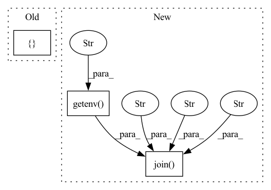

Pattern ID :699

Before Change
def _get_runtime_logs():
return {}
def _validate_config(config: Dict[str, Any], provider):
pass
After Change
def _get_runtime_logs():
mlflow_logs_dir = os.path.join(os.getenv("HOME"), "runtime", "mlflow", "logs")
all_logs = {"mlflow": mlflow_logs_dir
}
return all_logs
In pattern: SUPERPATTERN
Frequency: 3
Non-data size: 3
Instances
Fragment ID: 3414580
Project Name: oap-project/cloudtik
Commit Name: c63a94d3d38f028cb4f2f9cd12967c07bf805934
Time: 2023-02-03
Author: haifeng.chen@intel.com
File Name: python/cloudtik/runtime/ml/utils.py
M Class Name: AnonimousClass
N Class Name: AnonimousClass
M Method Name: _get_runtime_logs(0)
N Method Name: _get_runtime_logs(0)
M Parent Class:
N Parent Class:
M File Name: python/cloudtik/runtime/ml/utils.py
N File Name: python/cloudtik/runtime/ml/utils.py
M Start Line: 67
M End Line: 67
N Start Line: 67
N End Line: 70
'>
Before Change
def get_runtime_logs():
hadoop_logs_dir = os.path.join(os.getenv("HADOOP_HOME"), "logs")
flink_logs_dir = os.path.join(os.getenv("FLINK_HOME"), "logs")
all_logs = {"hadoop": hadoop_logs_dir,
"flink": flink_logs_dir,
"other": "/tmp/logs"
}
return all_logs
def _validate_config(config: Dict[str, Any], provider):
After Change
def get_runtime_logs():
hadoop_logs_dir = os.path.join(os.getenv("HADOOP_HOME"), "logs")
flink_logs_dir = os.path.join(os.getenv("FLINK_HOME"), "logs")
jupyter_logs_dir = os.path.join(os.getenv("HOME"), "runtime", "jupyter", "logs")
all_logs = {"hadoop": hadoop_logs_dir,
"flink": flink_logs_dir,
"jupyter": jupyter_logs_dir
}
'>
Fragment ID: 3414576
Project Name: oap-project/cloudtik
Commit Name: c63a94d3d38f028cb4f2f9cd12967c07bf805934
Time: 2023-02-03
Author: haifeng.chen@intel.com
File Name: python/cloudtik/runtime/flink/utils.py
M Class Name: AnonimousClass
N Class Name: AnonimousClass
M Method Name: get_runtime_logs(0)
N Method Name: get_runtime_logs(0)
M Parent Class:
N Parent Class:
M File Name: python/cloudtik/runtime/flink/utils.py
N File Name: python/cloudtik/runtime/flink/utils.py
M Start Line: 277
M End Line: 282
N Start Line: 277
N End Line: 283
'>
Before Change
def get_runtime_logs():
hadoop_logs_dir = os.path.join(os.getenv("HADOOP_HOME"), "logs")
spark_logs_dir = os.path.join(os.getenv("SPARK_HOME"), "logs")
all_logs = {"hadoop": hadoop_logs_dir,
"spark": spark_logs_dir,
"other": "/tmp/logs"
}
return all_logs
def _validate_config(config: Dict[str, Any], provider):
After Change
def get_runtime_logs():
hadoop_logs_dir = os.path.join(os.getenv("HADOOP_HOME"), "logs")
spark_logs_dir = os.path.join(os.getenv("SPARK_HOME"), "logs")
jupyter_logs_dir = os.path.join(os.getenv("HOME"), "runtime", "jupyter", "logs")
all_logs = {"hadoop": hadoop_logs_dir,
"spark": spark_logs_dir,
"jupyter": jupyter_logs_dir
}
'>
Fragment ID: 3414579
Project Name: oap-project/cloudtik
Commit Name: c63a94d3d38f028cb4f2f9cd12967c07bf805934
Time: 2023-02-03
Author: haifeng.chen@intel.com
File Name: python/cloudtik/runtime/spark/utils.py
M Class Name: AnonimousClass
N Class Name: AnonimousClass
M Method Name: get_runtime_logs(0)
N Method Name: get_runtime_logs(0)
M Parent Class:
N Parent Class:
M File Name: python/cloudtik/runtime/spark/utils.py
N File Name: python/cloudtik/runtime/spark/utils.py
M Start Line: 311
M End Line: 316
N Start Line: 311
N End Line: 317